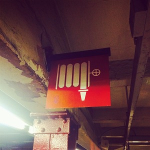

连续写了好几篇关于Dunne & Raby的文章，引发了不少讨论，也结识了在这个领域很有想法的年轻设计师们，我想，这篇文章是写给他们的。
昨天我参观了纽约当代艺术馆，在一个角落里看见了杜尚1913年的《自行车轮》，我就愣愣站着如此费解地看着这件比《泉》还早的“无心之作”，如何也体会不到作者所说“好像壁炉里跳跃的火”一样的着迷。
在回来的地铁站台上，我看见了一个红色消火栓的标志，那里面藏着喷水的软管，我不自觉地“跟它撞了一下拳”，很开心地乐了。直到那一刻，我才体会到摆脱功能目的之外的一种可爱形式，是不一样的审美，或者“有意味的形式（implicational form）”。

突然一下我明白了D&R所表达的情愫，也明白了与整个现代主义一脉相承的东西，那东西就是一代一代设计师反复纠结挣扎强迫的：我表达不出我想要表达，可我需要表达。
我没有自己任何一件得意的“作品”、我的手机里也没有那些被雕琢得像艺术品似的App、我没有接受过长期的美学和设计教育、可是我喜欢写博客，因为这是我“表达自己”的唯一手段。
而真正的问题是，虽然我们有越来越多的设计师，可越来越少的设计师都不记得该如何“表达”，事实上，不记得“表达”的本质是不会“思考”。
这就是时代的问题，在一边功能世界的设计师们忙忙碌碌不可终日，要么一身江湖气、要么一身硅谷气；另一边精神世界的设计师知识越多，焦虑越多。前者看到D&R的观点后认为“看起来很兴奋但不知道能有什么用”、后者看到D&R的观点后认为“最终依靠博物馆展品怎么看都不是正确的”。
确实，在逻辑上，D&R基本是说不通的，全书的逻辑都是断片的，章和章之间基本关系不大，都可独立阅读，如果从“说服性（convinciable）”这个角度来看本书的观点，基本完败。事实上全书最重要的观点是：
- 请接受你自己的怪异；
- 请建设属于你自己的虚拟世界；
- 请努力表达自己的怪异；
- 请学会使用意味；
- 请学会使用不同手段（有趣、幽默、友好、戏剧化）表达你的怪异；
而D&R面对的世界：
- 不接受离经叛道；
- 建设自己的虚拟世界是不现实的；
- 不愿意表达自己的怪异、纠结于自己的怪异；
- 不愿意思考导致的错误或过分的意味；
- 不会表达怪异；
这就是我认为D&R本书的价值，他们虽然没有在书中过多描述“现实世界的问题”（这样符合AB宣言的意味），但至少它把观点背后的意味体现得非常全面，这样的表达本身也是离经叛道的，是不得章法的，但我认为，是可体会的。
我喜欢一战之前的世界，各个领域的实践者们傲慢幼稚狂热地把玩着科学和新世界的哲学，喷张出从未有过的表达方式，这是消费主义盛世之下伟大的副产品。而现在我们所看到的世界，是被产品裹胁的价值观，是被消费主义圈养的消费者，是以侍奉消费者为荣耀的设计师，曾经的“表达主义盛世”稍一冒头就被迫不及待地打压和质疑“这是什么鬼”。
最大的问题是一方面，大量的设计师已经忘记了“表达”，也不需要思考；另一方面，那些会“表达”的设计师却忘记了生活，思考只是在徘徊和质疑。而D&R的精彩之处正是鼓励前者多进行思考和表达、教会后者如何更好和丰富地表达。
换句话说，比讨论D&R的理论有没有说服性更为应该思考的，是这个世界“不愿表达”、“不会表达”和“不尊重个体表达”的问题。
1913年美国的军火库（The Armory Show）展览，看到欧洲的现代艺术发展到如此多的表达形式，整个美国愤怒了，被激怒的人民义愤填膺地走上街头，打出“这是什么鬼东西”、“这有什么用”、“根本不能说服我”等口号，直到1930年后美国才开始走上现代设计的快车道。
很多人也跟我回复，说我的博客越来虚、越来越玄，而我希望最有趣的事情，是饮着酒吃着肉，跟你说“友尽”。
再如果，你懂这个道理，来，请给我一个虚拟的“撞拳”。